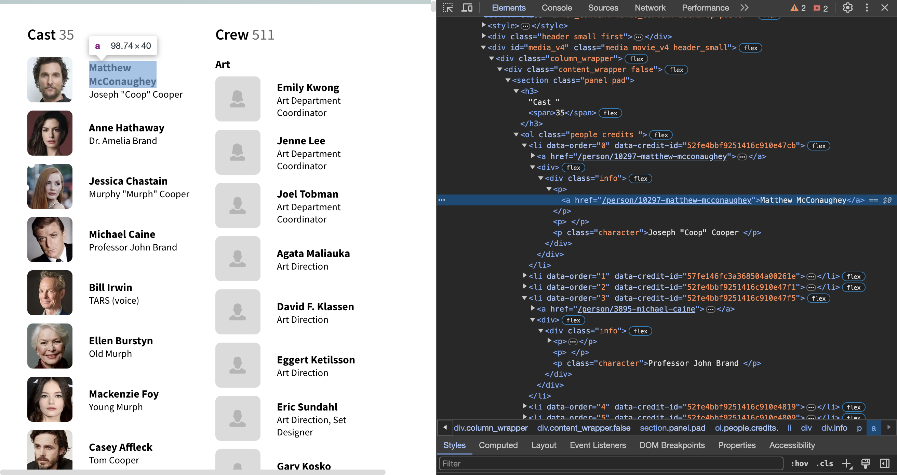
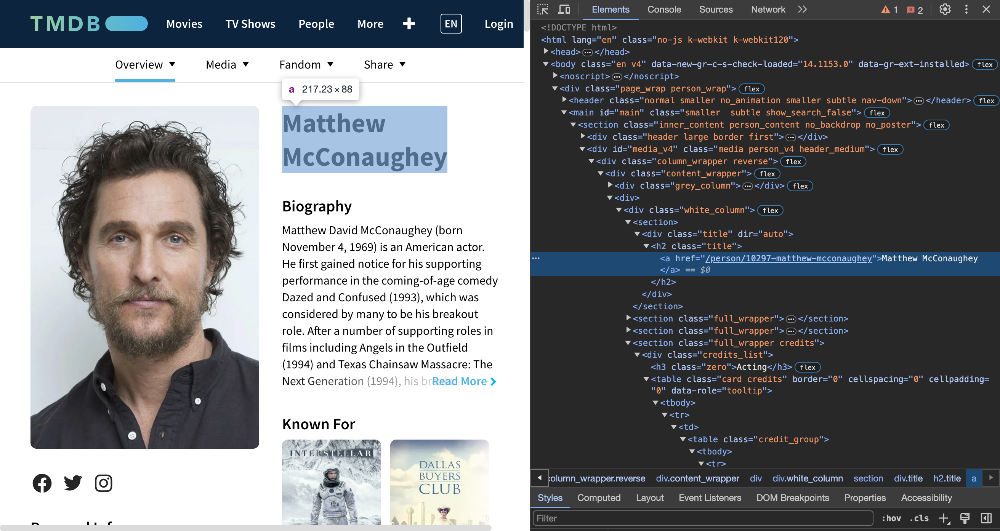
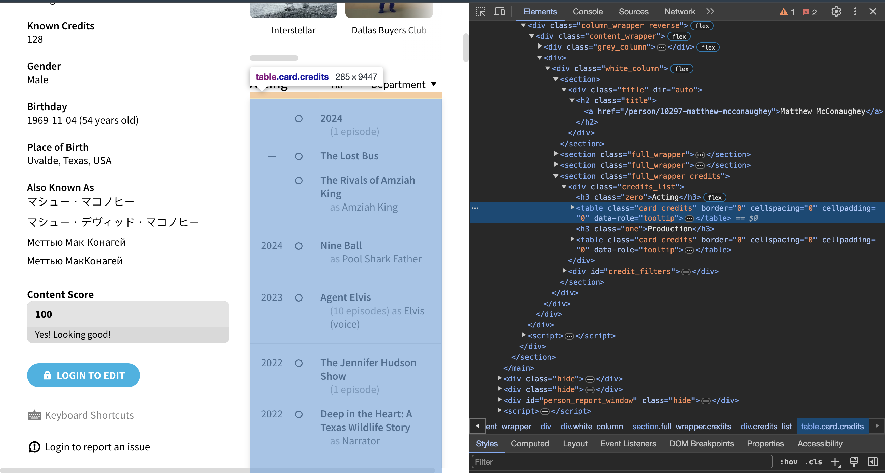
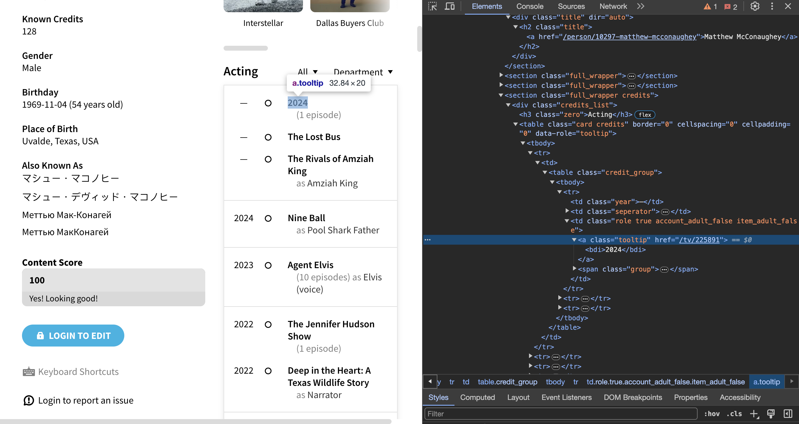
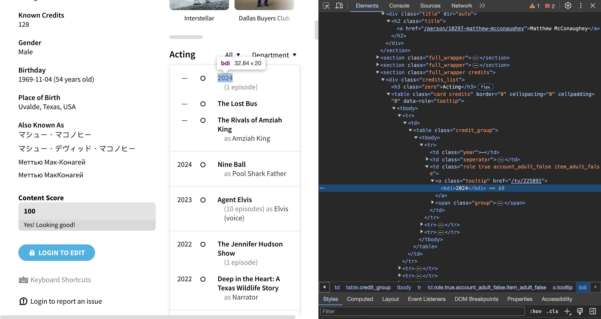
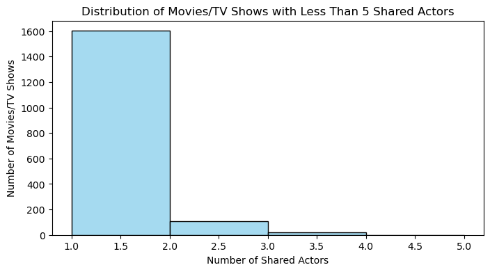

import plotly.io as pio
pio.renderers.default="iframe"Unleashing the Power of Scrapy: Scraping and Recommending Movies and TV Shows from TMDB
Intro
Welcome to the world of web scraping and data-driven recommendations! In today’s digital era, where information is abundant and readily accessible, leveraging the power of data extraction tools like Scrapy opens up a realm of possibilities. In this tutorial, we’ll embark on a journey to scrape data from TMDB (The Movie Database), a treasure trove of information about movies and TV shows. But we’re not stopping there; we’ll dive deeper into the web of interconnected data, exploring the crew members’ profiles and unraveling the threads of their acting history.
Using Scrapy, a powerful and versatile web crawling framework in Python, we’ll navigate through TMDB’s vast database with ease. Our mission? To gather detailed insights into specific movie and TV show pages, extract information about the cast and crew, and then traverse the web of actor profiles to unearth their acting repertoire. By analyzing the overlaps in their performances, we’ll construct a recommendation engine that suggests similar movies or TV shows based on shared talent.
Whether you’re a data enthusiast, a budding web developer, or simply curious about the magic behind personalized recommendations, this tutorial will equip you with the tools and knowledge to embark on your scraping and recommendation journey. So, let’s roll up our sleeves, fire up our code editors, and dive headfirst into the fascinating world of Scrapy and TMDB scraping!
Table of Contents
1. Web Scraper
1.1 Setup
1.1.1 Setting up a Scrapy Project
1.1.2 Test Scrapy for TMDB Scraping
1.2 Implementation2. Visualization and Recommendation
1. Web Scraper
1.1 Setup
1.1.1 Setting up a Scrapy Project
In this section, we’ll walk through the process of setting up a Scrapy project to scrape data from TMDB (The Movie Database). By following these steps, you’ll be able to create a structured project environment ready for web scraping.
Step 1: Activate Your Conda Environment
Open a terminal or command prompt and activate your Conda environment where you want to set up your Scrapy project. Type the following command:
conda activate PIC16B-24WThis command activates the specified Conda environment named “PIC16B-24W”. Ensure that you have created and configured this environment beforehand.(You can choose whatever environment you have)
Step 2: Create a Scrapy Project
Now, we’ll create a Scrapy project named “TMDB_scraper”. In your terminal, type the following command:
scrapy startproject TMDB_scraperThis command initializes a new Scrapy project named “TMDB_scraper”. Scrapy will generate several files and directories within this project. When you create a Scrapy project using the scrapy startproject command with the name “TMDB_scraper”, the generated project directory (TMDB_scraper) typically contains the following files and directories:
scrapy.cfg: This file is the configuration file for your Scrapy project. It contains settings for Scrapy deployment and other global configurations.
TMDB_scraper/ (directory inside TMDB_scraper/): This is the Python package directory containing your project’s code.
items.py: This file defines the data structure (items) that your spider will extract during scraping. You define the fields you want to extract from the website here.
middlewares.py: This file contains the middlewares used by Scrapy, such as user-agent rotation, proxy usage, etc.
pipelines.py: This file contains the pipelines used by Scrapy for processing scraped items. Pipelines are used to perform tasks like cleaning, validation, and storing data.
settings.py: This file contains Scrapy project settings, such as user-agent, download delay, etc. You can customize these settings according to your requirements.
spiders/ (directory): This directory contains your spider scripts.
- __init__.py: This file makes the
spidersdirectory a Python package.
- __init__.py: This file makes the
These are the essential files and directories that are created when you initialize a Scrapy project. Depending on your specific requirements and configurations, your project might have additional files or directories.
1.1.2 Test Scrapy for TMDB Scraping
We’ll start by configuring settings in the settings.py file to prevent excessive data downloads and avoid being blocked by the website. Then, we’ll explore using the Scrapy shell for interactive testing and debugging.
Step 1: Modify settings.py to Limit Page Count
Open the settings.py file located in your Scrapy project directory (TMDB_scraper) using a text editor. Add the following line to limit the number of pages to be scraped:
CLOSESPIDER_PAGECOUNT = 20This line prevents the scraper from downloading too much data during testing. Remember to remove this line later for full-scale scraping.
Step 2: Configure User-Agent to Mimic a Web Browser
To avoid getting blocked by TMDB, we’ll mimic a web browser’s behavior by modifying the USER_AGENT in the settings.py file. Replace the existing USER_AGENT line with the following:
USER_AGENT = 'Mozilla/5.0 (Windows NT 10.0; Win64; x64) AppleWebKit/537.36 (KHTML, like Gecko) Chrome/97.0.4692.71 Safari/537.36'This user-agent string resembles a typical web browser’s user-agent, which makes it less likely for TMDB to block our requests.
Or you can use other methods:
https://doc.scrapy.org/en/latest/topics/practices.html#avoiding-getting-banned
https://scrapeops.io/python-scrapy-playbook/scrapy-403-unhandled-forbidden-error/
https://scrapeops.io/web-scraping-playbook/403-forbidden-error-web-scraping/
https://scrapingrobot.com/blog/most-common-user-agents/
Step 3: Test Scraping with Scrapy Shell
Now, let’s test our scraping capability using Scrapy shell. Open a terminal or command prompt and navigate to your Scrapy project directory (TMDB_scraper). Then, run the following command:
scrapy shell https://www.themoviedb.org/movie/157336-interstellar/castReplace the URL with the desired TMDB page to scrape. Here I used Interstellar. This command launches the Scrapy shell with the specified user-agent and the provided URL.
Stay tuned for the next part of this tutorial series where we’ll explore writing spider scripts and extracting data from TMDB using Scrapy.
1.3 Implementation
In this section, we’ll create a Scrapy spider named tmdb_spider.py to scrape data from TMDB (The Movie Database) for a specific movie. We’ll set it up to accept the movie’s subdirectory as a command-line argument for easy customization.
Step 1: Create tmdb_spider.py
Inside the spiders directory of your Scrapy project (TMDB_scraper), create a new Python file named tmdb_spider.py. You can do this manually or by running the following command in your terminal:
touch TMDB_scraper/spiders/tmdb_spider.pyOpen this file in a text editor and add the following lines:
import scrapy
class TmdbSpider(scrapy.Spider):
name = 'tmdb_spider'
def __init__(self, subdir=None, *args, **kwargs):
self.start_urls = [f"https://www.themoviedb.org/movie/{subdir}/"]The __init__ method in the spider class initializes the spider with the provided subdirectory argument. This allows us to customize the URL to scrape based on the movie’s subdirectory.
To run the spider and scrape data for a specific movie, use the following command:
scrapy crawl tmdb_spider -o movies.csv -a subdir=671-harry-potter-and-the-philosopher-s-stoneReplace 671-harry-potter-and-the-philosopher-s-stone with the subdirectory of the movie you want to scrape. This command instructs Scrapy to crawl the specified URL and save the scraped data to a CSV file named movies.csv.
You’ve successfully created a Scrapy spider named tmdb_spider.py configured to scrape data from TMDB for a specific movie. By providing the movie’s subdirectory as a command-line argument, you can easily customize the spider to scrape data for different movies.
Here’s a basic outline of the TmdbSpider class:
import scrapy
class TmdbSpider(scrapy.Spider):
name = 'tmdb_spider'
def __init__(self, subdir=None, *args, **kwargs):
self.start_urls = [f"https://www.themoviedb.org/movie/{subdir}/"]
def parse(self, response):
# Navigate to the Full Cast & Crew page
pass
def parse_full_credits(self, response):
# Extract information about the cast members
# Navigate to each actor's personal page
# Call parse_actor_page for each actor
pass
def parse_actor_page(self, response):
# Extract the actor's acting history from their personal page
pass1.2.1 parse(self, response)
In the parse method: - We construct the URL for the Full Cast & Crew page by appending “cast” to the movie page’s URL. - We then yield a scrapy.Request object with the URL of the Full Cast & Crew page and specify parse_full_credits as the callback method.
import scrapy
class TmdbSpider(scrapy.Spider):
name = 'tmdb_spider'
def __init__(self, subdir=None, *args, **kwargs):
self.start_urls = [f"https://www.themoviedb.org/movie/{subdir}/"]
def parse(self, response):
# Navigate to the Full Cast & Crew page by adding "cast" after the start URL
full_credits_url = response.url + "cast"
# After navigation, call parse_full_credits
yield scrapy.Request(full_credits_url, callback=self.parse_full_credits)Let’s break down each part of the provided code snippet:
def parse(self, response):This is a method definition in a Scrapy spider class. It’s the default method called by Scrapy to handle responses downloaded for each request made.full_credits_url = response.url + "cast": This line of code constructs the URL for the Full Cast & Crew page. It takes the current URL of the response object and appends “cast” to it, which is the relative URL for the Full Cast & Crew page.yield scrapy.Request(full_credits_url, callback=self.parse_full_credits): This line of code yields a new Scrapy Request object. Scrapy usesRequestandResponseobjects for crawling web sites.Typically, Request objects are generated in the spiders and pass across the system until they reach the Downloader, which executes the request and returns a Response object which travels back to the spider that issued the request. This initiates a new request to thefull_credits_urlURL and specifiesself.parse_full_creditsas the callback function to handle the response.
In summary, this parse method is responsible for constructing a request to navigate to the Full Cast & Crew page and then calling the parse_full_credits method to handle the response from that page.
1.2.2 parse_full_credits(self, response)
The overall code looks like this:
def parse_full_credits(self, response):
cast_list = response.css('h3:contains("Cast") + ol li div.info')
for actor in cast_list:
actor_url = actor.css("a::attr(href)").get()
actor_page_url = response.urljoin(actor_url)
yield scrapy.Request(actor_page_url, callback=self.parse_actor_page)def parse_full_credits(self, response):This is a method definition within a Scrapy spider class. It’s intended to handle the response from the Full Cast & Crew page.cast_list = response.css('h3:contains("Cast") + ol li div.info'): This line of code uses CSS selectors to locate the elements containing information about each actor in the cast. It selects the<div>elements with the class “info” that are within list items(<li>)following an<ol>element immediately after an<h3>element containing the text “Cast” since we only want the Cast section instead of Crew. For how to use selector, make sure go through this: https://docs.scrapy.org/en/latest/topics/selectors.html

Now we have all the casts information, we need to extract each person’s page url by iteration.
for actor in cast_list:: This loop iterates over each element in the cast_list.actor_url = actor.css("a::attr(href)").get(): Within each iteration of the loop, this line of code extracts the URL of the actor’s personal page. It selects the value of the “href” attribute of the<a>element within the current actor’s<div>as you see in the screenshot above.actor_page_url = response.urljoin(actor_url): This line constructs the absolute URL for the actor’s personal page by joining the relative URL extracted in the previous step with the base URL of the current response.yield scrapy.Request(actor_page_url, callback=self.parse_actor_page): Finally, this line yields a new Scrapy Request object for each actor’s personal page. It specifies self.parse_actor_page as the callback function to handle the response from each actor’s page.
In summary, this parse_full_credits method is responsible for extracting the URLs of each actor’s personal page from the Full Cast & Crew page and yielding requests to scrape data from those individual pages using the parse_actor_page method.
1.2.3 parse_actor_page(self, response)
In this tutorial, we’ll cover how to scrape data from an actor’s personal page, focusing on extracting their past or current movies or TV shows.
The overall code looks like this:
def parse_actor_page(self, response):
# Yield a dictionary for each movie or TV show the actor has worked in an "Acting" role
actor_name = response.css('div.title h2.title a::text').get()
acting_table = response.css('h3:contains("Acting") + table.card.credits')
name_list = acting_table.css("a.tooltip")
for name in name_list:
movie_or_TV_name = name.css("bdi::text").get()
yield {"actor": actor_name, "movie_or_TV_name": movie_or_TV_name}
actor_name = response.css('div.title h2.title a::text').get(): This line extracts the actor’s name from the title of their personal page, which is under<div class='title'>, then under<h2 class='title'>then inside the<a>``</a>here we can get the name of the actor and store it in theactor_name, which also can be done in pervious method, feel free to try it out!

acting_table = response.css('h3:contains("Acting") + table.card.credits'): This line selects the table containing the actor’s acting credits. It looks for the heading “Acting” and then selects the adjacent table with the class “card” and “credits”. Note that there are several tables under the<div class='credits_list'>make sure you only capture the table with Acting as the header.

name_list = acting_table.css("a.tooltip"): This line selects all the name of a movie or TV show in which the actor has acted.for name in name_list:: This loop iterates over each link in thename_listsince we only want the text part of the list.

movie_or_TV_name = name.css("bdi::text").get(): Within each iteration of the loop, this line extracts the text representing the name of the movie or TV show from the link.yield {"actor": actor_name, "movie_or_TV_name": movie_or_TV_name}: Finally, this line yields a dictionary containing the actor’s name and the name of the movie or TV show they acted in.
Finally, we are done with the scraping part. We’ve learned how to extract an actor’s acting roles from their personal page using Scrapy. By understanding the structure of the actor’s page and using appropriate CSS selectors, we were able to extract the desired information effectively.
Now try to run this in terminal to implement the scraper:
scrapy crawl tmdb_spider -o results.csv -a subdir=157336-interstellarFeel free to replace any Movie or TV show you like!
This would give you a results.csv scraped. Before we proceed, remember to remove the restriction in the settings.py.
2. Visualization and Recommendation
# import libraries
import pandas as pd
import seaborn as sns
from matplotlib import pyplot as plt
import numpy as np
from plotly import express as pxLet’s import this file into our notebook to see what we got!
df = pd.read_csv("results.csv")df.info()<class 'pandas.core.frame.DataFrame'>
RangeIndex: 2063 entries, 0 to 2062
Data columns (total 2 columns):
# Column Non-Null Count Dtype
--- ------ -------------- -----
0 actor 2063 non-null object
1 movie_or_TV_name 2063 non-null object
dtypes: object(2)
memory usage: 32.4+ KBWe’ve got 2063 movies and TV shows!
df.head()| actor | movie_or_TV_name | |
|---|---|---|
| 0 | William Patrick Brown | Interstellar |
| 1 | William Patrick Brown | Mighty Med |
| 2 | William Patrick Brown | Friends with Benefits |
| 3 | William Patrick Brown | Chuck |
| 4 | Matthew McConaughey | 2024 |
Let’s determine the overlaps between these movies and TV shows to form the basis of our recommendation. The logic is straightforward: we’ll analyze the movies or TV shows that feature the actors from your favorite movie or show in the highest quantity.
recmd_movies_or_TV = pd.DataFrame(df.movie_or_TV_name.value_counts().reset_index())df.movie_or_TV_name.value_counts() we extract the movie_or_TV_name column from the dataframe and get unique values of this column with its count through .value_counts(), which would give us a Series. In order to make use of this Series, we reset the index through .reset_index() and transfer it into another data frame via pd.DataFrame().
# original column name are movie_or_TV_name and count, we change them to understand it easier into movie names and number of shared actors
recmd_movies_or_TV = recmd_movies_or_TV.rename(columns={'movie_or_TV_name':'movie names', 'count':'number of shared actors'})recmd_movies_or_TV['number of shared actors'].value_counts()number of shared actors
1 1602
2 107
3 18
4 9
7 6
6 6
9 2
8 2
35 1
10 1
Name: count, dtype: int64What we observe here is that 1602 rows of the data correspond to a single actor. This indicates that these actors are the only ones in the Interstellar crew who have performed in another movie or show, without any other members of the Interstellar crew. The same interpretation applies to the subsequent results, and the output is sorted based on the count.
Next, we may want to split the data to visualize it in two parts, as we are not interested in the solo performances for those 1602 rows, or in movies or TV shows that contain only 2, 3, or 4 members of the full crew. You can define the splitting criteria according to your own preferences; here, I am simply dividing it into recmd_more and recmd_less based on the presence of 4 or more shared actors.
recmd_more = recmd_movies_or_TV[recmd_movies_or_TV['number of shared actors'] >= 4 ]recmd_less = recmd_movies_or_TV[recmd_movies_or_TV['number of shared actors'] < 4 ]We create a horizontal bar plot using Plotly Express. We specify the DataFrame recmd_more as the data source, set the ‘number of shared actors’ as the x-axis, ‘movie names’ as the y-axis, and provide additional parameters for orientation and text.
import plotly.express as px
fig = px.bar(recmd_more, x='number of shared actors', y='movie names', orientation='h',
text='number of shared actors', title='Movie Names and Number of Shared Actors >= 5')We can adjust the position of the text annotations on the bars using the update_traces method.
fig.update_traces(textposition='outside')Next, we customize the layout of the plot by specifying axis titles, ordering categories, adjusting tick marks, and setting the height of the plot.
fig.update_layout(
xaxis_title='Number of Shared Actors',
yaxis_title='Movie Names',
yaxis_categoryorder='total ascending', # Optional: Order y-axis categories by total count
yaxis=dict(tickmode='linear'), # Optional: Ensure that y-axis ticks are shown for every movie
height=600
)By following these steps, you can create a customized horizontal bar plot using Plotly Express in Python. Experiment with different parameters and settings to achieve the desired visualization for your data.
Feel free to further customize the plot according to your specific requirements, such as adjusting colors, fonts, or adding annotations.
Here is the full code:
fig = px.bar(recmd_more, x='number of shared actors', y='movie names', orientation='h',
text='number of shared actors', title='Movie Names and Number of Shared Actors >= 5')
fig.update_traces(textposition='outside')
# Customizing the layout
fig.update_layout(
xaxis_title='Number of Shared Actors',
yaxis_title='Movie Names',
yaxis_categoryorder='total ascending', # Optional: Order y-axis categories by total count
yaxis=dict(tickmode='linear'), # Optional: Ensure that y-axis ticks are shown for every movie
height=500
)As we can see from the plot, Interstellar would of course be the top one we would recommend the it appears to be Saturday Night Live, which shares 10 actors. The View, Late Night with Seth Meyers share 9 actors with Interstellar. Well this would be a tool to do the recommand that is super obvious for the reader or the viewer.
plt.figure(figsize=(8, 4))
sns.histplot(recmd_less['number of shared actors'], bins=range(1, 6), kde=False, color='skyblue')
plt.xlabel('Number of Shared Actors')
plt.ylabel('Number of Movies/TV Shows')
plt.title('Distribution of Movies/TV Shows with Less Than 5 Shared Actors')
plt.show()
Since we cannot plot the thousands rows, we can visualize it through histplot though this provides not that much of the information we need for recommendation.
Now we are going to see that for each actor, the percentage of sole performance on the overall acting histroy, sole performance here means not with any other actors in the Interstellar crew.
Before we begin, let’s define the required columns in our DataFrame:
isDup: A boolean column indicating whether the movie or TV show is unique. IfTrue, it means there is a duplicate movie or TV show in the DataFrame, indicating it’s not a sole performance.dup_cnt: The count of occurrences whereisDupisTrueorFalse, grouped by actor andisDup.total_cnt: The total count of all acting roles for each actor.
Calculate isDup Column
We’ll calculate the isDup column using the duplicated method, which marks duplicate entries as True and unique entries as False.
df['isDup'] = df.duplicated(subset=['movie_or_TV_name'], keep=False)Calculate dup_cnt and total_cnt Columns
Next, we’ll calculate the dup_cnt and total_cnt columns using the groupby method along with the transform function to get the count of occurrences for each actor.
df['dup_cnt'] = df.groupby(["actor", 'isDup'])['movie_or_TV_name'].transform('count')
df['total_cnt'] = df.groupby(["actor"])['movie_or_TV_name'].transform('count')df['isDup'] = df.duplicated(subset=['movie_or_TV_name'], keep=False)
df['dup_cnt'] = df.groupby(["actor", 'isDup'])['movie_or_TV_name'].transform('count')
df['total_cnt'] = df.groupby(["actor"])['movie_or_TV_name'].transform('count')df| actor | movie_or_TV_name | isDup | dup_cnt | total_cnt | |
|---|---|---|---|---|---|
| 0 | William Patrick Brown | Interstellar | True | 2 | 4 |
| 1 | William Patrick Brown | Mighty Med | False | 2 | 4 |
| 2 | William Patrick Brown | Friends with Benefits | True | 2 | 4 |
| 3 | William Patrick Brown | Chuck | False | 2 | 4 |
| 4 | Matthew McConaughey | 2024 | False | 91 | 127 |
| ... | ... | ... | ... | ... | ... |
| 2058 | John Lithgow | Dealing: Or the Berkeley-to-Boston Forty-Brick... | False | 151 | 189 |
| 2059 | John Lithgow | Great Performances | False | 151 | 189 |
| 2060 | John Lithgow | Tony Awards | True | 38 | 189 |
| 2061 | John Lithgow | Today | True | 38 | 189 |
| 2062 | John Lithgow | Hallmark Hall of Fame | True | 38 | 189 |
2063 rows × 5 columns
Now we contruct the plot: Let’s break down what each line of code does:
px.bar(df, x='total_cnt', y='actor', orientation='h', color='isDup', text='total_cnt', title='Sole/Shared Performance Count for Each Actor'): - This line creates a horizontal bar plot using Plotly Express (px.bar). - The DataFrame df is used as the data source. - The x-axis represents the total count of performances (total_cnt). - The y-axis represents the actors (actor). - The bars are oriented horizontally (orientation='h'). - The color of the bars is determined by the isDup column. - The text annotations on the bars display the total count of performances. - The title of the plot is set to ‘Sole/Shared Performance Count for Each Actor’.
fig.update_traces(textposition='outside'): - This line updates the position of the text annotations on the bars to be outside the bars. - By default, the text annotations are placed inside the bars, but setting textposition='outside' moves them outside for better visibility.
yaxis_categoryorder='max ascending': This line specifies the order of categories (actors) on the y-axis based on the maximum value of their associated data points. Categories with higher maximum values will appear towards the top of the plot, while categories with lower maximum values will appear towards the bottom. You can alter the values to experiment.
yaxis=dict(tickmode='linear'): This line ensures that the tick marks on the y-axis are displayed in a linear fashion. This is the default behavior, so it’s not necessary to explicitly specify it unless you want to override any previous settings.
fig = px.bar(df, x='total_cnt', y='actor', orientation='h', color='isDup',
text='total_cnt', title='Sole/Shared Performance Count for Each Actor')
fig.update_traces(textposition='outside')
# Customizing the layout
fig.update_layout(
xaxis_title='Number of Shared Actors',
yaxis_title='Movie Names',
yaxis_categoryorder='max ascending', # Optional: Order y-axis categories by total count
yaxis=dict(tickmode='linear'), # Optional: Ensure that y-axis ticks are shown for every movie
height=600
)By hovering the plot, we can see that Michael Caine, John Lithgow, and Matt Damon have the greatest number of shared movies or TV shows with other crews in the Interstellar even though Michael Caine, John Lithgow, and Ellen Burstyn have the greatest number of actings. Therefore, we could not only recommand by the number of overlap among movies or shows, but also by the ‘popularity’ of the actor.